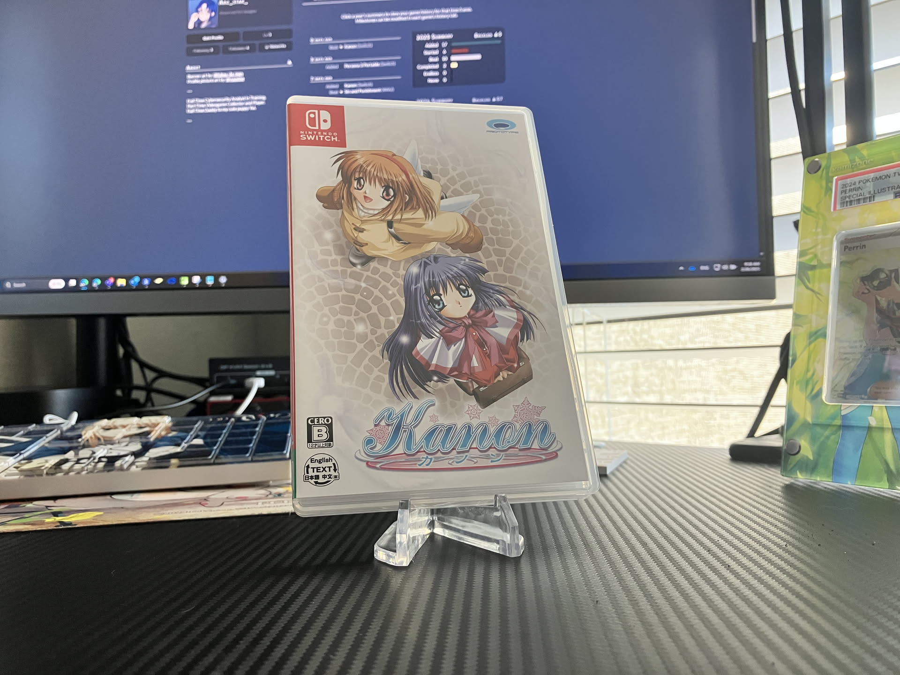
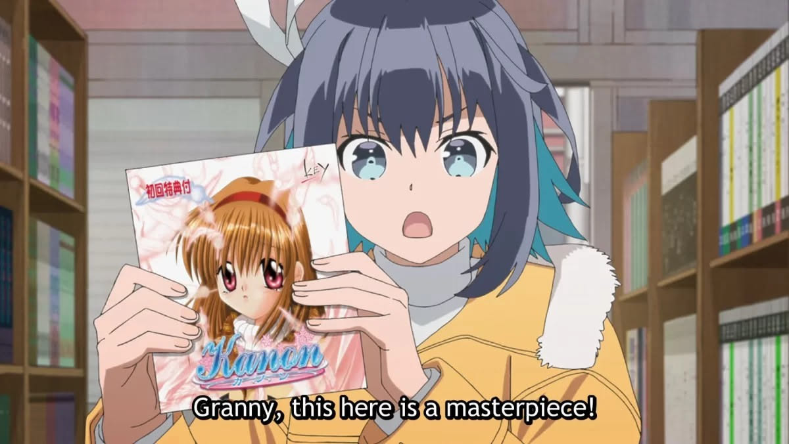

1game1week - Week 11 (3/11/25) - Kanon
It's been a little while. I took a little bit to take care of some personal business but it's finally week 11! (3/12 -> 3/19)
I'll get into the game in a second. I wanted to just yap for a little.
During some downtime last week, I've been backdating my backlog. It was way too much work. A good chunk of work was trying to dig and say, "when did I beat this?", or "which Christmas did my parents buy this game?"
Unfortunately I wasn't really able to backdate everything. It would've required an insane amount of effort and utilization of resources I simply don't have, like closed email accounts, or deleted social media accounts. Thankfully, I still had a lot at my fingertips... or, well, close enough anyways.
Somehow, I guess my past self saw this coming, because I had a huge spreadsheet dating back from 2015 with games I bought, the date I bought them, where, etc. It was a mini backlog!
The last one I did was dating the day I got Pokemon Pearl. This one was a bit involved. I remembered it being just around 2007, but didn't really have a set date.
I still have original Infernape, so I figured... I can just check it in Pokemon Home? Nope! In their everlasting wisdom they decided to make Gen 5 overwrite the original met date from Gen 4, with it being lost forever.
Next, I tried reverse-engineering the RNG seed that would be needed to generate that specific Infernape, and guesstimating based on whatever was available in the RNG calculator. No dice. Too broad.
Feeling deflated, the decision to just give up and go to bed was looking like the right one.... Until I snapped awake like that Squidward meme and grabbed my brother's Wii. Growing up, we shared this Wii.
What's that have to do with anything, though?
In Pokemon Battle Revolution, a very cool feature is that you're able to copy over your Diamond and Pearl boxes to build Battle Teams. Which means all details about all your monsters are copied.
Which means... looking through that same Infernape's summary yields the original date it was met, or the original date I received the game... 6/18/2007.
This was the most complex date I had to find, and probably the last one I'd be able to find anyways. Most of this was looking through DMs, watching Christmas videos, rummaging through console activity logs... I'm just happy I was able to do as much as I could.
All that work just to see that the only year I've ever beaten more games than I've gotten is 2010 (although I do have a few games with no dates, so... there may be hope yet). That'll change this year... for sure... haha...
Speaking of which:
New games from 3/5 -> 3/11:
* Suikoden I & II HD Remaster (PS5)
* Pentiment (PS5) [Thanks to my friend Nad for the recommendation!]
Currently, my backlog (https://backloggery.com/Aru_star_) is at +15 (lower is better).
And onto 1g1w. Once again, a game is considered "beaten" if I've accomplished the main objective of the game.
GAME: Kanon
PLATFORM: Switch
STARTED ON: 2/20
BEATEN ON: 2/26
Granny, this here is a masterpiece!
Classic bishoujo game.
Only been able to read Nayuki's route so far. This will change (though W11 will be the only 1g1w entry for it). I'm really excited to read all of them... except Makoto. I'm not a fan of her.
Bought this game recently off Amazon.co.jp after making sure it was a physical print with English on the cart- really awesome that a game like this can get a second physical print, specifically to add English.
My main thoughts are that Nayuki's route was a bit bland. There just isn't a lot of substance for me to bite into there. It felt like a route that's mostly there as a failsafe in case you fail to meet the conditions for any other heroine, rather than something you target.
That blandness translated into the overarching themes. The only thing that the route teaches you about the world is that Yuichi forgot "something" important.
In other visual novels, particularly Type-Moon and 07th novels, I've gotten pretty used to being introduced to a particular world, being taught its rules, being shown a bit of the overarching mystery, and being fed more and more information every route that help me put the pieces together, as difficult as that may be.
That's not to say it's a turnoff, though it might have been if I didn't know this novel is a classic for a reason... and trusting Key to write good stories.
While it's doubtful I'll comment on 1g1w about Kanon again, I'm really excited to dive back into it and read the rest of the novel. I just hope it won't be as bland as toast without jam.
See you next week!


Thanks for reading! If you need to contact me for any reason, please feel free to email me at aru@hoshikawa-aru.com.